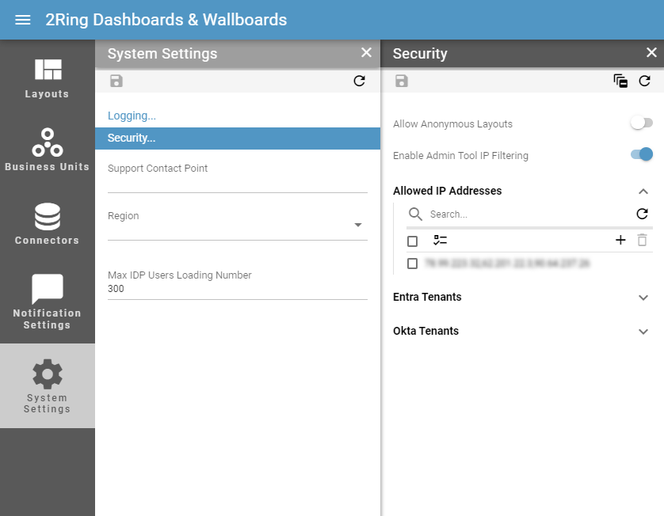
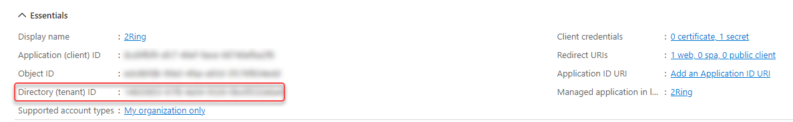
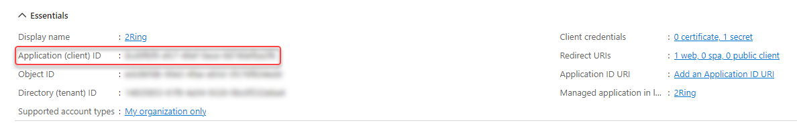
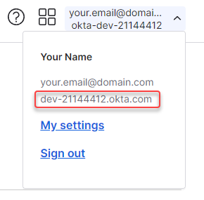
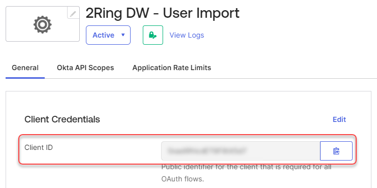

Security¶
- Allow Anonymous Layouts
Allows navigation to the Layout, without the need to login first. Affects only a direct navigation using the Short URL.
- Enable Admin Tool IP Filtering
Whether access to the Administration Tool is restricted to specific IP addresses.
- Allowed IP Addresses
List of IP addresses that are allowed to access the Administration Tool.
A dialog, with the option to add the logged-in user’s IP address to the list of allowed IP addresses appears in cases, where action requested by the user would result in loosing access to Administration Tool. This is a safeguard to prevent accidental removal of the access to the Administration Tool.
Access from the localhost address can be allowed implicitly by seting the “ImplicitlyAllowLocalhostIps” property to true in the security_settings.json, located in the {DW deploy folder}\settings folder.
- IP Mode
The way an IP address is defined.
Available modes are:Exact - An exact IP address.
List - Comma separated list of IP addresses.
Range - Range of IP addresses.
Subnet - IPv4 or IPv6 subnet.
- IP
Available only if “Exact” is selected as an IP Mode.
An IP address.
- IPs
Available only if “List” is selected as an IP Mode.
Comma separated list of IP addresses.
- Start IP/End IP
Available only if “Range” is selected as an IP Mode.
Specifies the range of IP addresses.
- IP Subnet
Available only if “Subnet” is selected as an IP Mode.
IPv4 or IPv6 subnet.
- Description
Description of the IP address.
- Entra Tenants
List of Entra Tenants whose users are available for importing. Fill in the information obtained in the Entra integration process. For more information see Entra Authentication chapter.
- Name
Name of the tenant.
- Tenant ID
ID of the tenant. Available in application details in Microsoft Azure Portal:

- Client ID
Client ID of the tenant. Available in application details in Microsoft Azure Portal:

- Client Secret
Client secret. It should be copied when creating a connected application in Microsoft Azure Portal, as the client secret appears only once for enhanced security
- System
Whether users belonging to the tenant should be available for import only for system administrator.
- Okta Tenants
List of Okta Tenants whose users are available for importing. Fill in the information obtained in the Okta integration process. For more information see Okta Authentication chapter.
- Name
Name of the tenant.
- Domain
Domain of the tenant. Available in profile details in Okta:

- Client ID
Client ID of the tenant. Available in application details in Okta:

- PEM Private Key
PEM Private Key. It should be copied when creating a connected application in Microsoft Azure Portal, as the PEM Private Key appears only once for enhanced security
- System
Whether users belonging to the tenant should be available for import only for system administrator.